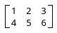
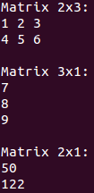

最近在学习《神经网络及其应用》一书（1992年出版的老古董），大量的东西都需要矩阵运算，所以干脆实现一个矩阵运算函数库。本来用的是Java，但是Java中内存的动态分配实在让我难受，因为太影响效率了，所以我最终还是决定用C。C中可以在栈中使用临时内存，函数退出即释放的特性用着很舒服，没有什么不确定性。
以下就是代码了～
matrix.h
/*
本文件定义了矩阵函数库：
初始化矩阵p_matrix，指定矩阵的行数p_rowc与列数p_colc，并从足够大的缓冲区p_buffer中分得内存空间，
所有值都被初始化为0，
返回分得内存空间之后缓冲区的起始位置。
matrix_value_t* matrix_init(matrix_t* p_matrix,uint32_t p_rowc,uint32_t p_colc,matrix_value_t* p_buffer)
将矩阵p_matrix的值都填充成p_value。
void matrix_fill(matrix_t* p_matrix,matrix_value_t p_value)
设置矩阵p_matrix中第p_row行、第p_col列的值为p_value。
void matrix_set_value(matrix_t* p_matrix,uint32_t p_row,uint32_t p_col,matrix_value_t p_value)
获取矩阵p_matrix中p_row行、第p_col列的值。
matrix_value_t matrix_get_value(matrix_t* p_matrix,uint32_t p_row,uint32_t p_col)
将矩阵p_src中的值复制到矩阵p_dest中，要求两个矩阵维度相同。
void matrix_copy(matrix_t* p_dest,matrix_t* p_src)
将矩阵p_src转置的结果放入矩阵p_dest中，要求两个矩阵的维度互为转置。
void matrix_trans(matrix_t* p_dest,matrix_t* p_src)
将矩阵p_src1与矩阵p_src2相加，结果放入矩阵p_dest，要求三个矩阵维度相同。
void matrix_add(matrix_t* p_dest,matrix_t* p_src1,matrix_t* p_src2)
将矩阵p_src1与矩阵p_src2相乘，结果放入矩阵p_dest，
要求矩阵p_src1的维度是axb，矩阵p_src2的维度是bxc，矩阵p_dest的维度是axc。
void matrix_mul(matrix_t* p_dest,matrix_t* p_src1,matrix_t* p_src2)
将矩阵p_src与常数p_k相乘，结果放入矩阵p_dest，要求两个矩阵维度相同。
void matrix_mul_k(matrix_t* p_dest,matrix_t* p_src,matrix_value_t p_k)
将矩阵p_matrix打印到文件p_file中。
void matrix_print(matrix_t* p_matrix,FILE* p_file)
如需修改矩阵中值的类型，请修改matrix_value_t和PRINTF_FORMAT的定义
*/
#ifndef MATRIX_H
#define MATRIX_H
#include <stdint.h>
#include <stdio.h>
typedef int32_t matrix_value_t;
#define PRINTF_FORMAT "%d"
typedef struct matrix
{
uint32_t rowc,colc;
matrix_value_t* values;
}
matrix_t;
matrix_value_t* matrix_init(matrix_t* p_matrix,uint32_t p_rowc,uint32_t p_colc,matrix_value_t* p_buffer);
void matrix_fill(matrix_t* p_matrix,matrix_value_t p_value);
void matrix_set_value(matrix_t* p_matrix,uint32_t p_row,uint32_t p_col,matrix_value_t p_value);
matrix_value_t matrix_get_value(matrix_t* p_matrix,uint32_t p_row,uint32_t p_col);
void matrix_copy(matrix_t* p_dest,matrix_t* p_src);
void matrix_trans(matrix_t* p_dest,matrix_t* p_src);
void matrix_add(matrix_t* p_dest,matrix_t* p_src1,matrix_t* p_src2);
void matrix_mul(matrix_t* p_dest,matrix_t* p_src1,matrix_t* p_src2);
void matrix_mul_k(matrix_t* p_dest,matrix_t* p_src,matrix_value_t p_k);
void matrix_print(matrix_t* p_matrix,FILE* p_file);
#endif
matrix.c
#include "matrix.h"
#include <assert.h>
matrix_value_t* matrix_init(matrix_t* p_matrix,uint32_t p_rowc,uint32_t p_colc,matrix_value_t* p_buffer)
{
p_matrix->rowc=p_rowc;
p_matrix->colc=p_colc;
p_matrix->values=p_buffer;
matrix_fill(p_matrix,0);
return p_buffer+p_rowc*p_colc;
}
void matrix_fill(matrix_t* p_matrix,matrix_value_t p_value)
{
uint32_t t_row,t_col;
for(t_row=0;t_row<p_matrix->rowc;t_row++)
for(t_col=0;t_col<p_matrix->colc;t_col++)
matrix_set_value(p_matrix,t_row,t_col,p_value);
}
void matrix_set_value(matrix_t* p_matrix,uint32_t p_row,uint32_t p_col,matrix_value_t p_value)
{
assert(p_row<p_matrix->rowc&&p_col<p_matrix->colc);
p_matrix->values[p_row*p_matrix->colc+p_col]=p_value;
}
matrix_value_t matrix_get_value(matrix_t* p_matrix,uint32_t p_row,uint32_t p_col)
{
assert(p_row<p_matrix->rowc&&p_col<p_matrix->colc);
return p_matrix->values[p_row*p_matrix->colc+p_col];
}
void matrix_copy(matrix_t* p_dest,matrix_t* p_src)
{
assert(p_dest->rowc==p_src->rowc&&p_dest->colc==p_src->colc);
uint32_t t_row,t_col;
for(t_row=0;t_row<p_dest->rowc;t_row++)
for(t_col=0;t_col<p_dest->colc;t_col++)
matrix_set_value(p_dest,t_row,t_col,matrix_get_value(p_src,t_row,t_col));
}
void matrix_trans(matrix_t* p_dest,matrix_t* p_src)
{
assert(p_dest->rowc==p_src->colc&&p_dest->colc==p_src->rowc);
uint32_t t_row,t_col;
for(t_row=0;t_row<p_dest->rowc;t_row++)
for(t_col=0;t_col<p_dest->colc;t_col++)
matrix_set_value(p_dest,t_row,t_col,matrix_get_value(p_src,t_col,t_row));
}
void matrix_add(matrix_t* p_dest,matrix_t* p_src1,matrix_t* p_src2)
{
assert(p_src1->rowc==p_src2->rowc&&p_src1->colc==p_src2->colc);
assert(p_dest->rowc==p_src1->rowc&&p_dest->colc==p_src1->colc);
uint32_t t_row,t_col;
for(t_row=0;t_row<p_dest->rowc;t_row++)
for(t_col=0;t_col<p_dest->colc;t_col++)
matrix_set_value(p_dest,t_row,t_col,
matrix_get_value(p_src1,t_row,t_col)+matrix_get_value(p_src2,t_row,t_col));
}
void matrix_mul(matrix_t* p_dest,matrix_t* p_src1,matrix_t* p_src2)
{
assert(p_src1->colc==p_src2->rowc);
assert(p_dest->rowc==p_src1->rowc&&p_dest->colc==p_src2->colc);
uint32_t t_row,t_col;
for(t_row=0;t_row<p_dest->rowc;t_row++)
{
for(t_col=0;t_col<p_dest->colc;t_col++)
{
matrix_value_t t_total=0;
uint32_t t_cursor;
for(t_cursor=0;t_cursor<p_src1->colc;t_cursor++)
t_total+=matrix_get_value(p_src1,t_row,t_cursor)*matrix_get_value(p_src2,t_cursor,t_col);
matrix_set_value(p_dest,t_row,t_col,t_total);
}
}
}
void matrix_mul_k(matrix_t* p_dest,matrix_t* p_src,matrix_value_t p_k)
{
assert(p_dest->rowc==p_src->rowc&&p_dest->colc==p_src->colc);
uint32_t t_row,t_col;
for(t_row=0;t_row<p_dest->rowc;t_row++)
for(t_col=0;t_col<p_dest->colc;t_col++)
matrix_set_value(p_dest,t_row,t_col,matrix_get_value(p_src,t_row,t_col)*p_k);
}
void matrix_print(matrix_t* p_matrix,FILE* p_file)
{
fprintf(p_file,"Matrix %dx%d:n",p_matrix->rowc,p_matrix->colc);
uint32_t t_row,t_col;
for(t_row=0;t_row<p_matrix->rowc;t_row++)
{
for(t_col=0;t_col<p_matrix->colc;t_col++)
{
fprintf(p_file,PRINTF_FORMAT,matrix_get_value(p_matrix,t_row,t_col));
if(t_col==p_matrix->colc-1)
fprintf(p_file,"n");
else
fprintf(p_file," ");
}
}
fprintf(p_file,"n");
}
再附加一个使用的例子：
#include "matrix.h"
int main()
{
matrix_value_t t_buffer[1024];
matrix_value_t* t_pointer=t_buffer;
matrix_t t_a;
t_pointer=matrix_init(&t_a,2,3,t_pointer);
matrix_set_value(&t_a,0,0,1);
matrix_set_value(&t_a,0,1,2);
matrix_set_value(&t_a,0,2,3);
matrix_set_value(&t_a,1,0,4);
matrix_set_value(&t_a,1,1,5);
matrix_set_value(&t_a,1,2,6);
matrix_print(&t_a,stdout);
matrix_t t_b;
t_pointer=matrix_init(&t_b,3,1,t_pointer);
matrix_set_value(&t_b,0,0,7);
matrix_set_value(&t_b,1,0,8);
matrix_set_value(&t_b,2,0,9);
matrix_print(&t_b,stdout);
matrix_t t_c;
t_pointer=matrix_init(&t_c,2,1,t_pointer);
matrix_mul(&t_c,&t_a,&t_b);
matrix_print(&t_c,stdout);
return 0;
}
这个例子中，代码段
matrix_t t_a;
t_pointer=matrix_init(&t_a,2,3,t_pointer);
matrix_set_value(&t_a,0,0,1);
matrix_set_value(&t_a,0,1,2);
matrix_set_value(&t_a,0,2,3);
matrix_set_value(&t_a,1,0,4);
matrix_set_value(&t_a,1,1,5);
matrix_set_value(&t_a,1,2,6);
先创建一个2行3列的矩阵t_a，并将各个值设置为如下：

代码段
matrix_t t_b;
t_pointer=matrix_init(&t_b,3,1,t_pointer);
matrix_set_value(&t_b,0,0,7);
matrix_set_value(&t_b,1,0,8);
matrix_set_value(&t_b,2,0,9);
则创建一个3行1列的矩阵t_b，并将各个值设置为如下：

最后代码段
matrix_t t_c;
t_pointer=matrix_init(&t_c,2,1,t_pointer);
matrix_mul(&t_c,&t_a,&t_b);
创建一个2行1列的矩阵t_c，然后执行t_axt_b，结果存入t_c。
执行结果正确：
